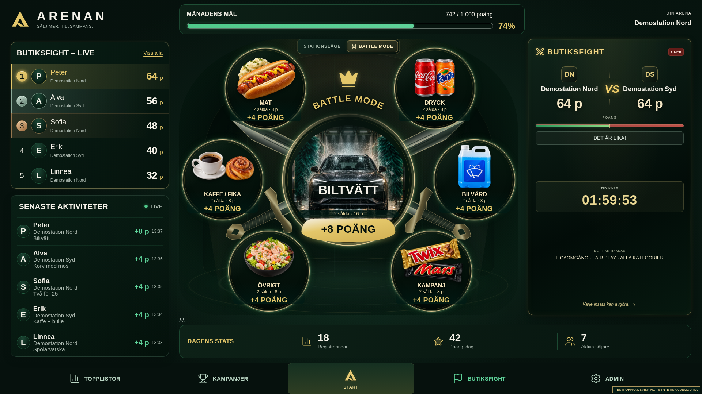
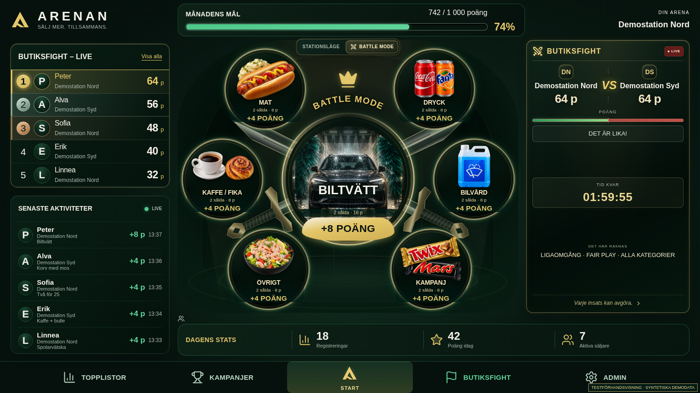
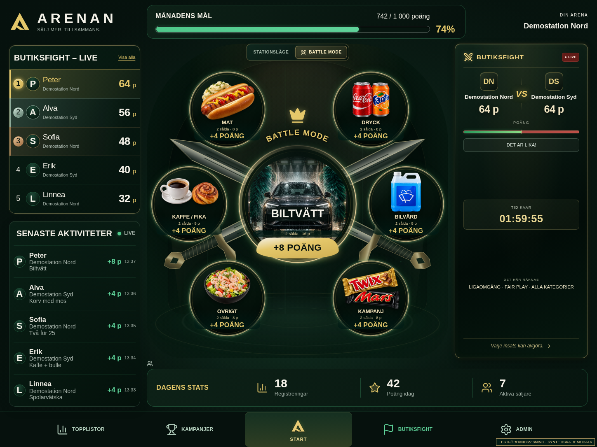
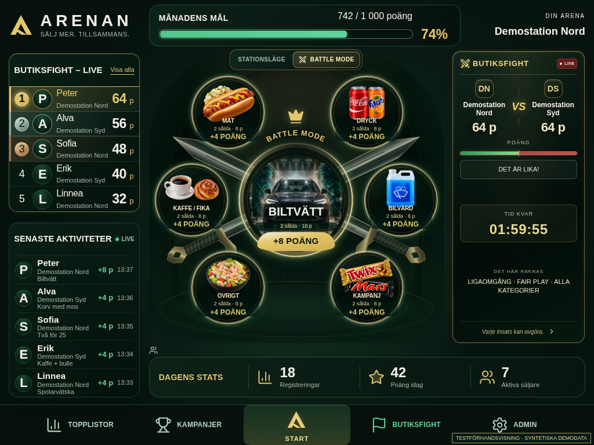
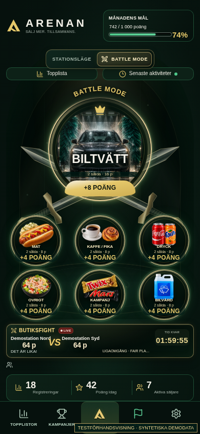
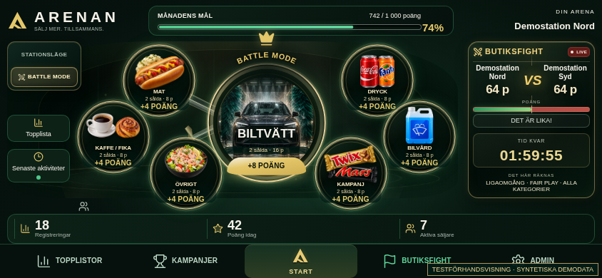
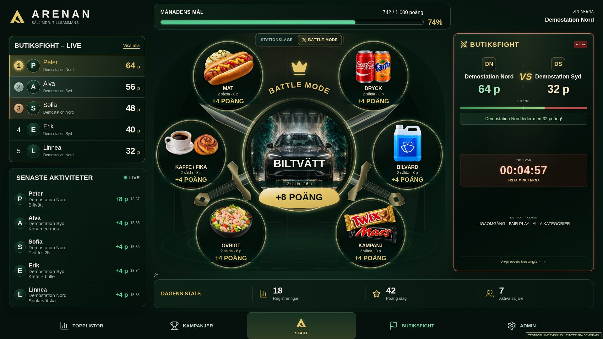
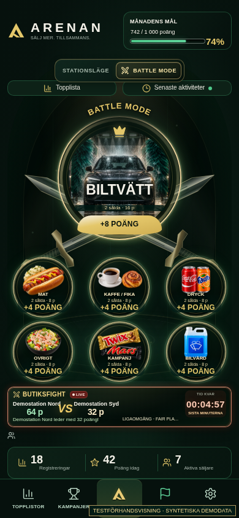

ARENAN · Battle Mode refinement V2 18 kuraterade bilder från verklig React/CSS i Chromium. TESTFÖRHANDSVISNING · SYNTETISKA DEMODATA. Klicka på bilden för full upplösning. Animationer avslutas vid capture; puls och reduced motion verifieras separat i browser-tester.
Slutrapport · Ändrade filer · Tester · Responsive · Prestandaunderlag · Manifest
Battle Mode · neutral / alla kategorier 
Alla sju kategorier · 1920×1080 1920×1080 · syntetisk QA 
Alla sju kategorier · 1536×864 1536×864 · syntetisk QA 
Alla sju kategorier · 1448×1086 1448×1086 · syntetisk QA 
Alla sju kategorier · 1024×768 1024×768 · syntetisk QA 
Alla sju kategorier · 390×844 390×844 · syntetisk QA 
Alla sju kategorier · 844×390 844×390 · syntetisk QA Ledning och slutspurt Egen station leder · lugnt 1920×1080 · syntetisk QA ≤60 minuter · amber 1920×1080 · syntetisk QA ≤15 minuter · starkare edge-light 1920×1080 · syntetisk QA 
≤5 minuter · slutspurt 1920×1080 · syntetisk QA 
Slutspurt · mobil 390×844 · syntetisk QA